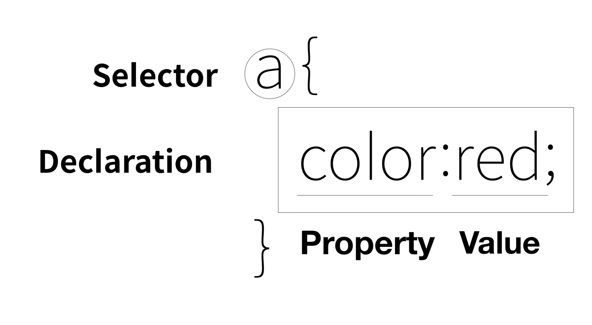

2022.3.2~
<오늘 배운 학습법&내용>

출처: 생활코딩
- 디자인적 요소를 위해 font라는 HTML 태그를 개발했지만, 그것은 다른 태그들과 달리 정보를 설명하는 기능이 아니라는 한계가 있었다. 디자인 자체를 정보라고 할 수는 없다.
시각장애인이 보면 의미가 없는 것은 정보가 아닌 부분도 생각해볼 필요. 웹페이지가 갖는 정보로서의 가치가 현격하게 떨어질 위험.
- 또 만약 1억개의 폰트 컬러 태그가 있다면 그것의 변경은 일일이 어떻게 할 것인가?
- 웹 브라우저는 기본적으로 코드를 HTML이라고 생각한다. CSS는 HTML과는 완전히 다른 컴퓨터 언어다.
따라서 CSS를 사용할 때는 컴퓨터에게 그것이 CSS라는 것을 알려줘야 한다. 그 태그가 style 태그다.
- style 태그 사이에서, '이 웹 페이지에 있는 a태그에 대해서' 스타일을 적용하려, 단지 style 태그 사이에서, a{} 를 작성해주면 된다.
*a{}: 선택자(selecter)라고 한다. CSS 적용 대상 설정. {}사이의 CSS 문법은 선언(declaration)/효과 라고 한다.
- 좋은 코드는 기본적으로 중복을 제거하는 일이다.
- CSS: Cascading Style System. 캐스캐이�딩은 한 element에 대한 다양한 효과 중 영향력의 우선순위 설정하는 규칙.
- CSS는 font라는 HTML의 태그와 달리, 일괄적으로 동일 속성의 대상에 적용할 수 있다는 점에서 획기적. 또한 코드 면에서 볼 때 정보를 규정짓는 HTML과 디자인 효과에 작용하는 요소들을 정돈된 형태(style로 묶임)로 구분해주어, 추후 코드의 활용이 더 용이하다.
- 결국 CSS는 HTML의 중요한 기능을 훼손시키지 않으면서도 효율적인 방법으로 웹페이지를 디자인하기 위해 등장한 것.
- style이라는 태그로 태그로서의 CSS를 묶을 수도 있지만, HTML태그 속에서 속성으로서 CSS를 기능하게 할 수 있다. style속성이다. 이 속성을 쓰면 컴퓨터는 "~"을 CSS의 문법에 따라 해석한다.
- 효과를 지정한 후에는 끝에 늘 세미콜론을 붙여 구분해준다. 이 구분으로 하나의 선택자에 대해 여러 개의 효과를 설정할 수 있으며, 줄바꿈하지 않고 코드 작성이 가능하다.
- 오늘의 css태그 style, class
- 오늘의 css 속성&값(property&property value): margin-top,font-size, text-decoration, text-intent, width
- 그룹화: class, class="saw" 유형은 html이다. style태그 속 .saw 는 class="saw"를 지칭
- 동일 선택자일 때 더 가까이 있는 css명령어에 따른다. 태그 선택자 < class 선택자 < id 선택자 순으로 우선순위를 갖는다.
포괄적 의미를 갖는 태그보다 예외적 기능을 갖는 선택자의 우선순위가 높아야 작업에 용이하기 때문.
id 선택자는 1개만 지정 가능하며 선택자 앞에 #. id는 유일값이므로 다른 곳에서는 동일 id값이 나오면 안 된다.
css selector reference 참고하여 똑똑하고 효율적인 코드를 작성하자.